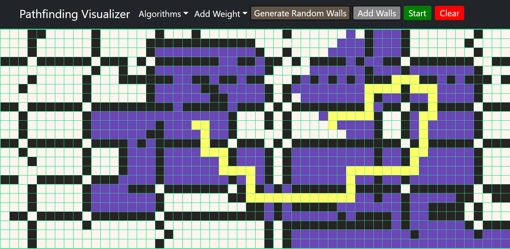
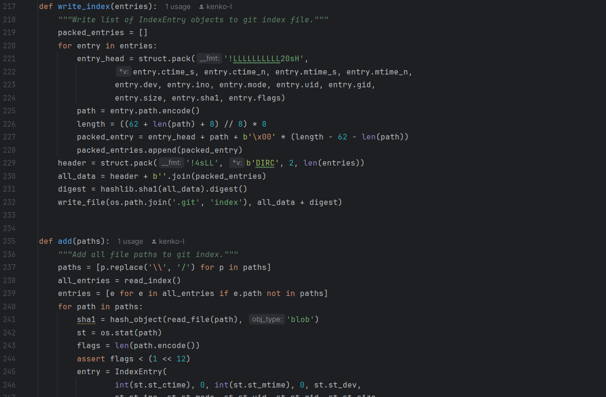
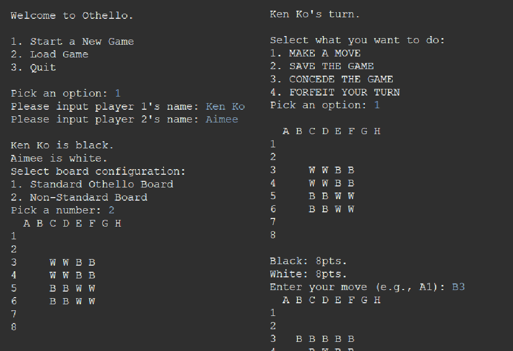

-
Pathfinding Visualizer
A website that demonstrates how various algorithms find the shortest path between two points on an adjustable grid. Users can place walls, add weighted nodes, and generate random mazes to test different pathfinding algorithms.
run app JavaScript HTML/CSS BootStrap
-
Platform Game
A platform game about a fearless pirate navigating through an island in search of loot while battling enemies such as pinching crabs, dodging canon fire and avoiding deadly spike traps.
 source code
Java
source code
Java
-
MyGit
A local version control like Git that can create a repository, add files to the index, commit, and push to Github.
source code
Python
-
Othello
A two-player Othello game featuring a customizable board, with options to play against a computer, concede your turn, forfeit the match, and save the current game state for future play.
source code
Java